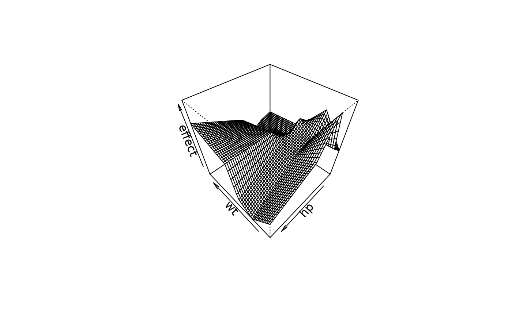
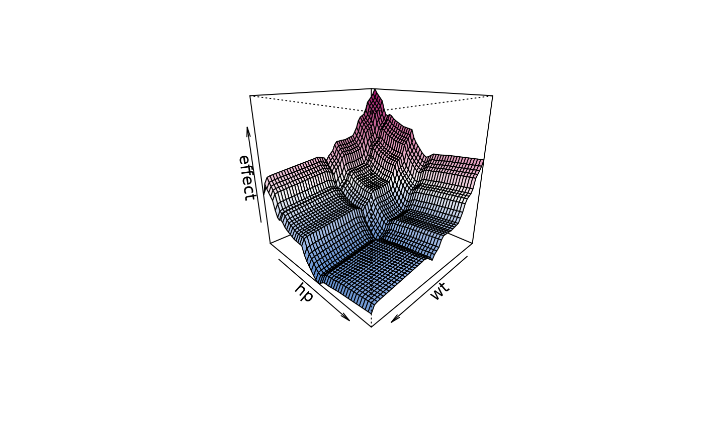
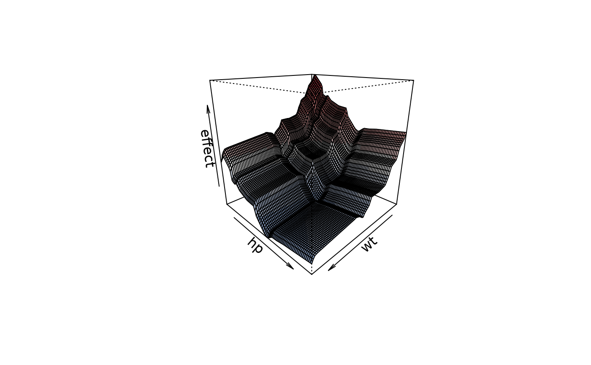

Visualizes the combined effect of two variables from a "mid" object
using a 3D perspective plot via persp().
Arguments
- x
a
"mid"object, typically the result ofinterpret().- terms
a character vector of term labels/expressions or a formula specifying 2-variable effects to plot. Defaults to all second-order interactions.
- theme
optional color theme name or
"colortheme"object used to color surface facets. Defaults toNULL(standardpersp()appearance).- intercept
logical. If
TRUE, adds the intercept to the plotted effect (or inferred from each term expression when omitted).- main.effects
logical. If
TRUE, includes constituent main effects when plotting an interaction term.- data
optional data.frame used when plotting raw-variable expressions (e.g.,
"x"whenlog(x)is in the model).- limits
optional numeric vector of length 2 for
zlim(may containNAfor partial specification).- resolution
integer (or length-2 integer vector) specifying the evaluation grid density for continuous axes. Defaults to
c(50L, 50L).- lumped
logical. If
TRUE(default), uses lumped factor levels when a variable appears only in interactions; automatically set toFALSEfor any variable that mixes main effects and interactions.- ...
additional arguments passed on to
persp().
Value
persp.mid() invisibly returns the viewing transformation matrix for a
single plot, or a named list of such matrices when multiple plots are drawn.
Details
Each element of terms produces one 3D perspective plot.
A single element may be a two-variable interaction label (e.g., "wt:hp")
or a formula-like expression string involving two variables (e.g.,
"wt * hp + 1" or "wt + hp"), which is extracted via
subset.mid().
When terms = NULL, all second-order interaction terms in x are
plotted in sequence.
By default (theme = NULL), surface coloring is left to
graphics::persp(). When a theme is supplied, surface facets are
colored according to their mean effect values using map_to_colors().
Examples
mid <- interpret(mpg ~ wt * hp + factor(am), data = mtcars, lambda = 0.5)
#> 'model' not passed: response variable in 'data' is used
# Plot only the interaction effect
persp(mid, terms = "wt:hp", theta = 225, phi = 45)

# Include constituent main effects
persp(mid, terms = "wt * hp", theme = "azurerose", theta = 135, phi = 20)

# Plot additive main effects with higher resolution
persp(mid, terms = "wt + hp", theme = "steps", resolution = 80L, theta = 135, phi = 20)
